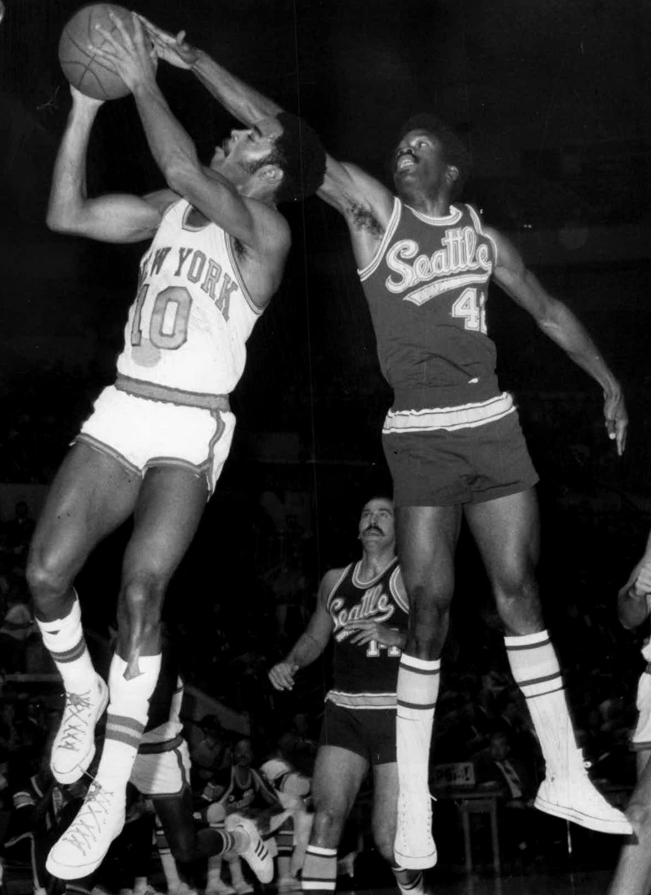

• Braun played 12 seasons for the Knicks from 1947 to 1961, excluding two seasons missed due to military service. In his Knicks career, he averaged 14.1 points and made the All-Star team five times.
• In 9 seasons with the Knicks from the late 1940s to the late 1950s, Gallatin averaged 12.7 points and 12.1 rebounds. He made seven straight All-Star games in the ‘50s and played a key part in New York’s finals appearances in 1952 and 1953.
• Regarded as one of the greatest Knicks of all time, Reed spent his entire 10-year career with the team from 1964 to 1974. He averaged 18.7 points, 12.9 rebounds, and over a block for his career. He made seven all-star teams, but is best known for winning Finals MVP in each of the Knicks’ only two championship seasons in 1970 and 1973. “The Captain” is famous for playing through an injury in game 7 of the 1970 finals against the Los Angeles Lakers and providing a spark that led to the team’s first title.
• Also regarded as one of the greatest Knicks of all-time, Clyde spent 10 seasons with the Knicks (1967-1977), and the seven-time all-star averaged 18.9 points, 6.1 assists, 5.9 rebounds, and almost two steals. He had arguably the greatest performance in Knicks history in Game 7 of the 1970 finals, when he delivered 36 points and 19 assists to bring New York City its first NBA championship. He is a basketball Hall of Famer as a player and broadcaster.
